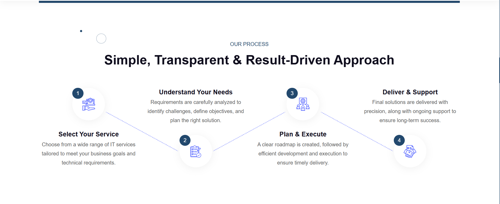

The problem
The company runs several consumer-facing e-commerce brands, each with slightly different product pages, checkout flows, and UI conventions. Every new campaign or product launch required redesigning the same patterns, buttons, forms, product cards, instead of shipping.
Design-to-dev handoff was inconsistent, conversion-critical surfaces were diverging, and iterative testing was slow because there was no single source of truth.
My role & approach
- Discovery first. Audited every product-brand page, mapped shared patterns, and catalogued divergences. Interviewed marketing, dev, and QA to find the friction points.
- Tokens before components. Built a token layer (color, spacing, radius, type) so one change could cascade across all brand themes.
- Components, not screens. Designed card, CTA, input, PDP, and checkout components that any brand could adopt, with brand-level overrides handled via tokens.
- Iterate with data. Each design change shipped behind an A/B test; analytics (GA + event instrumentation) told us whether it won.

Key decisions
1. One flow, many brands
The biggest structural decision was to treat multi-brand not as "N designs" but as "one design system, N token sets." This eliminated the most expensive class of rework: rebuilding the same checkout or PDP for each brand.
2. Instrumented every funnel step
Every form, every landing CTA, every checkout step emits events. This meant we could attribute changes to specific design decisions instead of guessing.
Outcomes
The system is the platform for every landing page, campaign, and product flow going forward. New campaign pages that took weeks now launch in days.